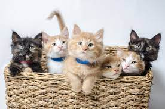
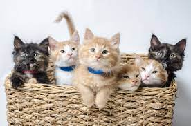

Why are cats so great?
People always seem to wonder what makes cats so great. Well understanding this is pretty simple. Just like dogs, cats can be very loving creatures that care for people to a high cappacity.
In this article we discuss cats and the reasons why they are the best! By discussing this topic here, I hope to clarify why i think cast are the best house pet.
“A happy arrangement: many people prefer cats to other people, and many cats prefer people to other cats.” – Mason Cooley
People always seem to wonder what makes cats so great. Well understanding this is pretty simple. Just like dogs, cats can be very loving creatures that care for people to a high cappacity.
Thank you for veiwing my thought for how cats are so great.